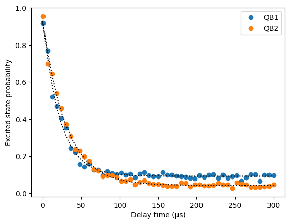

Example: Measuring T1#
T1 is an experiment that measures the relaxation time of a qubit.
Information stored in a qubit decays exponentially. The time constant of the longitudinal decay is called the relaxation time $T_1$.
The experiment measures $T_1$ by preparing selected qubits in the excited state by applying an X gate, waiting some time, and measuring the qubit.
The waiting time is swept to reveal the exponential decay of the excited state probability.
import os
import matplotlib.pyplot as plt
import numpy as np
from scipy.optimize import curve_fit
from exa.common.control.sweep.sweep import Sweep
from iqm.pulla.pulla import Pulla
from iqm.pulse import Circuit
from iqm.pulse import CircuitOperation as Op
from iqm.pulse.playlist.visualisation.base import inspect_playlist
from iqm.qiskit_iqm import IQMProvider
iqm_server_url = os.environ['PULLA_IQM_SERVER_URL'] # or set the URL directly here
os.environ["IQM_TOKEN"] = os.environ.get("IQM_TOKEN") # or set the token directly here
p = Pulla(iqm_server_url)
provider = IQMProvider(iqm_server_url)
backend = provider.get_backend()
compiler = p.get_standard_compiler()
Preparing the circuit#
We need to select the physical qubits to work on. These are available on the QPU:
qubits = compiler.chip_topology.qubits_sorted
qubits
('QB1', 'QB2', 'QB3', 'QB4', 'QB5')
Out of these, we select a few:
qubits = qubits[0:2]
Now we create all the circuits. In each circuit, we do a PRX($\pi$), or $X$, then a delay operation, then measure all qubits.
Instead of creating a circuit for each delay time (old method), we now create a parametric circuit by defining a circuit generating function with delay being the main input variable.
def _t1_circuit(delay: float = 0.0) -> list[Circuit]:
instructions = []
for qubit in qubits:
instructions += [
Op("prx", (qubit,), args={"angle": np.pi, "phase": 0.0}),
Op("delay", (qubit,), args={"duration": delay}),
]
instructions.append(Op("measure", qubits, args={"key": "M"}))
return [Circuit("T1", tuple(instructions))]
settings = compiler.get_settings(circuits=_t1_circuit)
delay_sweep = Sweep(
parameter=settings.stages.circuit_generation.circuit.delay.parameter,
data=np.linspace(0.0, 300e-6, 51), # In seconds
)
settings.controllers.options.playlist_repeats = 500
# Average over shots. In normal circuit execution, this would be equivalent to averaging over shots
settings.controllers.options.averaging_bins = 1
# We can also achieve the same with
settings.set_shots(500, averaging_bins=1)
job_definition, context = compiler.compile(
circuits=_t1_circuit,
components=["QB1", "QB2"],
settings=settings,
sweeps=[delay_sweep],
)
Then compile the circuits. We tweak the settings so that the shots are averaged by the server, so that we don’t need to. The results therefore return as sampled probabilities.
shots = settings.controllers.options.playlist_repeats
time_axis = np.asarray(delay_sweep.data)
job = p.submit_playlist(job_definition, context=context)
job.wait_for_completion()
We can also visualise the final playlist. We should see that each circuit is different and the waits at the end are increasing towards the end.
from IPython.core.display import HTML
HTML(inspect_playlist(job_definition.sweep_definition.playlist, range(5))) # Show first 5 circuits
Extract and plot the results
def exp_func(x, a, b, c):
return a * np.exp(- x / b) + c
plt.figure()
x = time_axis * 1e6
results = job.result().circuit_measurement_results
for i, qubit in enumerate(qubits):
# results is a list of CircuitMeasurementResults, one per circuit in the sweep
# Since we set averaging_bins = shots, the results contains averaged probabilities
y = np.array([res["M"][0][i] for res in results])
popt, _ = curve_fit(exp_func, time_axis, y, p0=[1, 50e-6, 0])
print(f"{qubit} T1 = {popt[1]*1e6 : .1f} µs")
plt.plot(x, y, 'o', label=qubit)
plt.plot(x, exp_func(np.array(time_axis), *popt), 'k:')
plt.xlabel("Delay time (µs)")
plt.ylabel("Excited state probability")
plt.legend()
plt.show()
QB1 T1 = 22.3 µs
QB2 T1 = 30.2 µs
